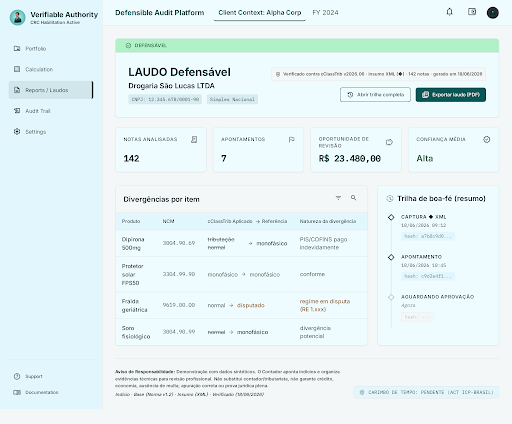
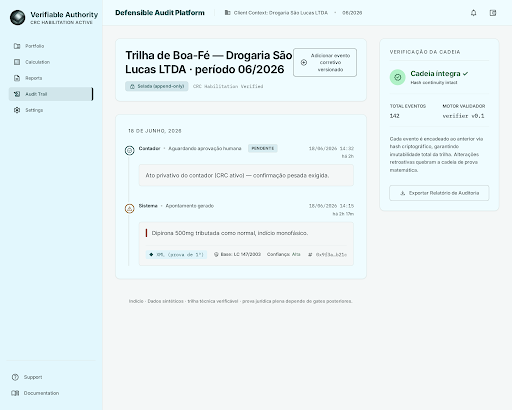
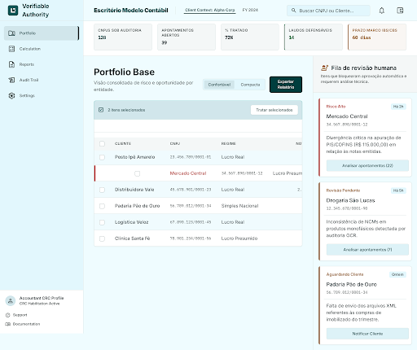

Vendida para o escritório contábil (o canal). O núcleo é a apuração defensável da Reforma — auditoria de cClassTrib/NCM + uma trilha de boa-fé rastreável que protege o escritório da multa de IBS/CBS de ago/2026. Este documento fixa a direção de design (do DESIGN.md), mostra os mockups das telas-herói e propõe uma série de nomes para vocês validarem.
Síntese de pesquisa massiva (HYDRA squad-design + auditoria de 11 concorrentes BR/global + UX de confiança + paletas WCAG). O princípio-mãe: a prova é a interface. A confiança não vem de “parecer caro” — vem de parecer verificável. Estética = a estética da prova.
O teal-petróleo significa verificado/aprovado/conforme = o nosso moat, e diferencia do azul-clichê dos incumbentes (Domínio/Conta Azul). O acento é usado com parcimônia; domina o neutro.
Tipografia: Inter (UI/dados) + IBM Plex Mono (XML/hashes) · números sempre tabular-nums · contraste WCAG AA validado. Alternativa conservadora documentada: “Azul Confiança Institucional” (#1a45bc) — para vocês decidirem.
Oficial pela prova, moderno pela restrição — a contenção visual de um Stripe/Mercury com a substância de uma trilha verificável.
Geradas no Stitch a partir do DESIGN.md (não desenhadas à mão). São conceito visual com dados sintéticos — não é o produto construído. Pequenos rótulos ainda saem em inglês (limitação do gerador); a direção visual é o que importa validar.



Antes de construir a plataforma, validamos a disposição a pagar pelo laudo defensável. Wizard of Oz: o cliente vê um produto; nos bastidores somos nós (Breno + IA) rodando à mão. O laudo é real; a automação é fingida.
| Semana | Atividade |
|---|---|
| 0 | Renan recruta 5 escritórios; alinhar expectativa (piloto pago de diagnóstico). Coletar 1º lote de XMLs. |
| 1–2 | Análise manual; primeiros laudos; iterar o formato com 1–2 contadores (legível? acionável? revenderia?). |
| 3–4 | Entregar laudos completos; apresentar a cobrança; registrar objeções reais. |
| 5 | Fechar pagamentos / success-fees; medir. |
| 6 | Decisão persevere/pivot + retro (tempo real de operação por escritório). |
Carta de intenção não conta. Dinheiro trocando de mão, ou success-fee assinado, conta. O contador escolhe a porta:
Laudo recorrente de monitoramento de divergência.
Sobre crédito recuperado de ≥1 cliente. O contador/tributarista assina a PER/DCOMP.
≥3 de 5 pagam (recorrente ou 1 success-fee) → libera construir a Fase 1 (motor + golden-set + trilha).
1–2 pagam → reformular oferta/segmento/laudo e repetir com outros 5.
0 pagam → a hipótese de valor falhou; revisitar a tese, não automatizar.
Filtrados por 3 travas: posicionamento “defensável, não copiloto”; linguagem segura (sem prometer “crédito/garantia/correto”); e sem colisão com marcas fiscais BR (ROIT, Qive, SIEG, Arquivei, Domínio, Jettax, e-Auditoria). Disponibilidade .com.br é heurística — checar Registro.br/INPI só nos 3 finalistas.
| # | Nome | Território | Tom | Observação-chave |
|---|---|---|---|---|
| 1 | Lastro curinga | Defensabilidade | sério-moderno | Diz a tese numa palavra (“apuração com lastro”). Checar domínio/TM. |
| 2 | Fidúcia | Autoridade | sério++ | É o instituto da boa-fé. Premium, baixa colisão. |
| 3 | Anteo | Defensabilidade | moderno | De anterioridade (trilha datada); inventado, ownable. |
| 4 | Aferir / Afere seguro | Precisão | sério-moderno | “Medir com instrumento” sem prometer resultado. |
| 5 | Respaldo | Defensabilidade | sério | Mensagem cristalina na venda; palavra comum (risco domínio). |
| 6 | Selo | Autoridade | sério | “Selo de boa-fé”. Cuidado: “selo fiscal” tem sentido IPI. |
| 7 | Calibra seguro | Precisão | moderno | Liga ao golden-set/confidence calibrada; técnico, ownable. |
| 8 | Marco | Reforma | sério | Marco da Reforma + ponto de referência. TM amplo (comum). |
| 9 | Defensa seguro | Defensabilidade | sério-moderno | Grafia enxuta de defesa; amarra ao posicionamento. |
| 10 | Probo | Autoridade | sério | De probidade/boa-fé; ético, baixa colisão. |
| 11 | Conformo | Abstrato | sério-moderno | Compliance sem dizer compliance; domínio provável livre. |
| 12 | Régua | Reforma/Precisão | moderno | “Passar a régua” na apuração; amigável + técnico. |
Lastro — único que entrega o posicionamento defensável numa só palavra.
Aferir · Calibra · Régua · Defensa.
Fidúcia · Selo · Probo.